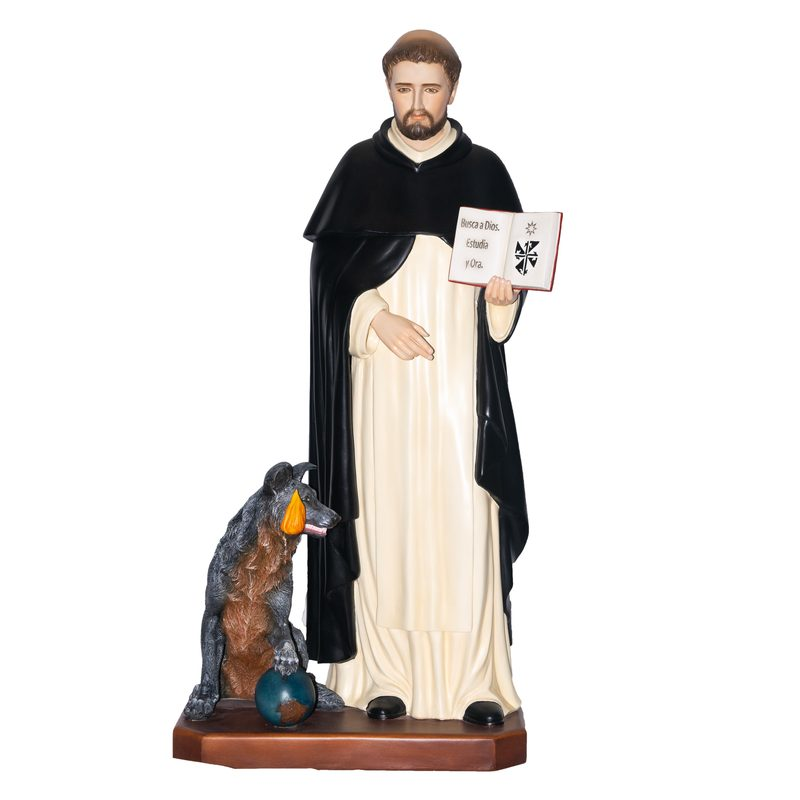

Sacrum nace de un taller ecuatoriano donde el oficio de esculpir se transmite de generación en generación. Durante más de 30 años, nuestras manos han dado forma a la fe y a la belleza, pieza por pieza, sin dos iguales.
Hoy llevamos esa tradición al mundo: esculturas religiosas y decorativas que llegan a hogares, templos y colecciones en distintos países, hechas con el mismo cuidado con el que se hizo la primera pieza hace tres décadas.
No producimos en serie. Cada escultura pasa por manos que la moldean, la pulen y la pintan a mano, una por una.
Más de 30 años de oficio artesanal.
Atención al detalle en cada rostro, pliegue y acabado.
Entendemos el valor emocional de cada pieza.
Exportamos a hogares, templos y colecciones en todo el mundo.